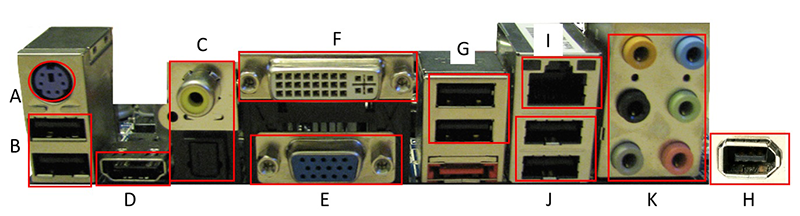

P13 External Components of the Desktop System Unit(台式機系統單元的外部組件) <<
Previous Next >> P15 USB AND PS 2(隨身碟)
P14 Connections Between Common Peripherals and
Standard PortsConnections Between Common Peripherals and Standard Ports
(通用外設與標準端口之間的連接)
The peripherals connect to the computer via standard ports. Ports allow for information to flow into or out of the computer as part of the input and output subsystems. External devices, such as keyboards, mice, printers, scanners, storage devices, monitors, and others can connect to the computer through various types of cables, which connect to specific ports. On most modern systems, this has been reduced down to a common, standard interface, the universal serial bus port (USB port). Older systems have various ports for various functions, which are now referred to as legacy ports, such as PS/2, serial, and parallel ports. They were difficult to configure and required hardware resources to be dedicated to them, such as interrupt requests, direct memory access, and specific I/O (input/output) port addresses. In USB, this is all handled by the operating system automatically. This makes hardware conflicts rare in current systems. Many customers will still have computers with legacy ports. So, it is important to understand multiple ports and connections.The photo below offers a close-up view of a motherboard’s port cluster.
外圍設備通過標準端口連接到計算機。端口允許信息作為輸入和輸出子系統的一部分流入或流出計算機。外部設備（例如鍵盤，鼠標，打印機，掃描儀，存儲設備，顯示器和其他設備）可以通過各種類型的電纜連接到計算機，這些電纜連接到特定的端口。在大多數現代系統上，這已簡化為通用的標準接口，即通用串行總線端口（USB端口）。較舊的系統具有用於各種功能的各種端口，這些端口現在稱為傳統端口，例如PS / 2，串行和並行端口。它們很難配置，並且需要專用於它們的硬件資源，例如中斷請求，直接內存訪問和特定的I / O（輸入/輸出）端口地址。在USB中，這全部由操作系統自動處理。這使得在當前系統中很少發生硬件衝突。許多客戶仍將擁有帶有舊端口的計算機。因此，了解多個端口和連接很重要。下面的照片提供了主板端口集群的特寫視圖。

The chart below describes the functions of the ports depicted in the image above
.
|
The photo below shows various types of connectors.
Image CreditsTerry Chay. DB-25 parallel cable photo (B) used under public domain from Clipart Today. DB-15 cable photo (C) used under public domain from Wikipedia. VGA cable photo (D) used under public domain image from Clipart Today. DVI cable photo (E) used under public domain from Clipart Today. PS/2 cable photo (F) used under CC-BY-SA license from Wikipedia. RJ-11 (telephone modem) cable photo (G) used under CC-BY-NC-ND license from Lori Semprevio. RJ-45 cable photo (H) used under CC-BY-NC-ND license from Gabriel R F. USB Cable photo (I) used under public domain from Wikipedia. HDMI cable photo (J) used under public domain from Clipart Today. Mini stereo cable photo (K) used under public domain from Clipart Today.
圖片來源：Terry Chay。 DB-25並行電纜照片（B），來自Clipart Today的公共領域中使用。 DB-15電纜照片（C）在維基百科的公共領域使用。 VGA電纜照片（D）在來自Clipart Now的公共領域圖像下使用。 DVI電纜照片（E），來自Clipart Today的公共領域中使用。 PS / 2電纜照片（F）已獲得Wikipedia的CC-BY-SA許可。 RJ-11（電話調製解調器）電纜照片（G），根據Lori Semprevio的CC-BY-NC-ND許可使用。 Gabriel R F的CC-BY-NC-ND許可下使用的RJ-45電纜照片（H）。Wikipedia的公共領域下使用的USB電纜照片（I）。 剪貼畫今天在公共領域使用的HDMI電纜照片（J）。 剪貼畫今天在公共領域使用的微型立體聲電纜照片（K）。
| CONNECTOR連接器 |
NAME名稱 |
FUNCTION功能 |
| A |
DB-9 serial |
Used for serial devices such as a mouse or external modem用於串行設備，例如鼠標或外部調製解調器。. |
| B |
DB-25 parallel |
Used to connect printers.
用於連接打印機。
|
| C |
DB-15 (two rows of pin receptacles) |
Used to connect joysticks or musical instrument digital interface (MIDI) devices.
用於連接操縱桿或樂器數字接口（MIDI）設備。
|
| D |
High-density DB-15 (three rows of pins) |
Used to connect a video graphics array (VGA) and super VGA (SVGA) display device.
用於連接視頻圖形陣列（VGA）和超級VGA（SVGA）顯示設備。
|
| E |
DVI video |
Used to connect a digital video interface (DVI) display monitor.
用於連接數字視頻接口（DVI）顯示監視器。
|
| F |
6-pin mini-DIN |
Used for PS/2 keyboards and mice. By convention, purple connectors are used for keyboards and green connectors are used for mice.
用於PS / 2鍵盤和鼠標。按照慣例，紫色連接器用於鍵盤，綠色連接器用於鼠標。
|
| G |
RJ-11 (four wires inside plug interface) |
Used for internal modem or telephone.
用於內部調製解調器或電話。
|
| H |
RJ-45 (eight wires inside jack interface) |
Used to connect to an Ethernet network.
用於連接到以太網。
|
| I |
USB type A |
Used for external universal serial bus (USB) devices such as printers and storage devices.
用於外部通用串行總線（USB）設備，例如打印機和存儲設備。
|
| J |
HDMI |
Used to connect a high definition multimedia interface (HDMI) display monitor.
用於連接高清多媒體接口（HDMI）顯示監視器。
|
| K |
Mini Stereo |
Also known as "1/8 inch" or "3.5 mm" connectors, these are used to connect audio devices such as headphones and speakers.
也稱為“ 1/8英寸”或“ 3.5毫米”連接器，這些連接器用於連接音頻設備，例如耳機和揚聲器。
|
|
P13 External Components of the Desktop System Unit(台式機系統單元的外部組件) <<
Previous Next >> P15 USB AND PS 2(隨身碟)